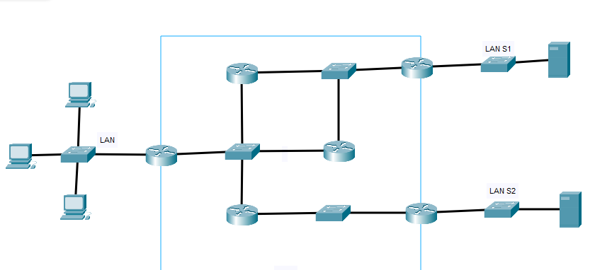

Voici le résumé de mes configurations IP et des tests réalisés dans le cadre de ce TP.
Réponse :
Correction : Réseau nord : 172.16.0.1 172.16.0.2, Réseau sud : 172.17.0.1 172.17.0.2
Réponse :
Correction : 172.16.0.254 172.17.0.254
Réponse :
Correction : Vous devez tester la connectivité entre les PC en utilisant la commande "ping" depuis l'invite de commande ou le terminal pour vérifier si les PCs peuvent se joindre via le routeur.
Réponse :
Oui, j'ai dû configurer une passerelle pour que les deux LAN puissent communiquer entre eux. Le routeur joue le rôle de passerelle entre les réseaux.
Correction : Oui, car les machines ne sont pas sur le même réseau.
Réponse :
Un réseau de ce type est utilisé lorsque l'on doit connecter deux réseaux locaux distincts. Le routeur, configuré avec des adresses IP spécifiques, sert de passerelle pour permettre la communication entre les réseaux.
Correction : Deux réseaux LAN interconnectés.
Voici un schéma représentant la configuration du réseau dans Cisco :
